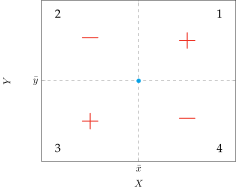
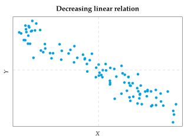
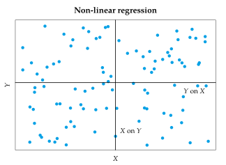
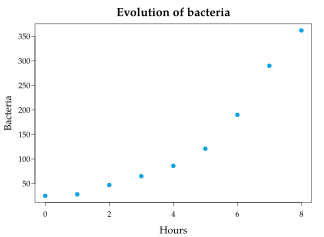
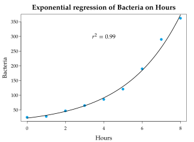
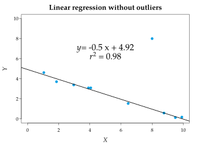
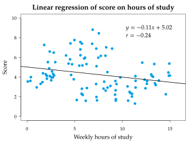
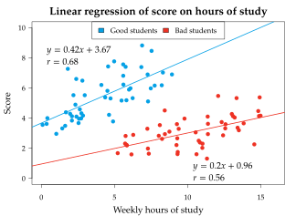

Regression In the last chapter we saw how to describe the distribution of a single variable in a sample. However, in most cases, studies require to describe several variables that are often related. For instance, a nutritional study should consider all the variables that could be related to the weight, as height, age, gender, smoking, diet, physic exercise, etc. To understand a phenomenon that involve several variables is not enough to study every variable by its own. We have to study all the variables together to describe how they interact and the type of relation among them. Usually in a dependency study there is a dependent variable $Y$ that it is supposed to be influenced by a set of variables $X_1,\ldots,X_n$ known as independent variables. The simpler case is a simple dependency study when there is only one independent variable, that is the case covered in this chapter. Joint distribution Joint frequencies To study the relation between two variables $X$ and $Y$, we have to study the joint distribution of the two-dimensional variable $(X,Y)$, whose values are pairs $(x_i,y_j)$ where the first element is a value of $X$ and the second a value of $Y$. Definition - Joint sample frequencies. Given a sample of $n$ values and a two-dimensional variable $(X,Y)$, for every value of the variable $(x_i,y_j)$ is defined: Absolute frequency $n_{ij}$: Is the number of times that the pair $(x_i,y_j)$ appears in the sample. Relative frequency $f_{ij}$: Is the proportion of times that the pair $(x_i,y_j)$ appears in the sample. $$f_{ij}=\frac{n_{ij}}{n}.$$ For two-dimensional variables it make no sense cumulative frequencies. Joint frequency distribution The values of the two-dimensional variable with their frequencies is known as joint frequency distribution, and is represented in a joint frequency table. $$\begin{array}{|c|ccccc|} \hline X\backslash Y & y_1 & \cdots & y_j & \cdots & y_q \newline \hline x_1 & n_{11} & \cdots & n_{1j} & \cdots & n_{1q} \newline \vdots & \vdots & \vdots & \vdots & \vdots & \vdots \newline x_i & n_{i1} & \cdots & n_{ij} & \cdots & n_{iq} \newline \vdots & \vdots & \vdots & \vdots & \vdots & \vdots \newline x_p & n_{p1} & \cdots & n_{pj} & \cdots & n_{pq} \newline \hline \end{array}$$ Example (grouped data). The height (in cm) and weight (in kg) of a sample of 30 students is: (179,85), (173,65), (181,71), (170,65), (158,51), (174,66), (172,62), (166,60), (194,90), (185,75), (162,55), (187,78), (198,109), (177,61), (178,70), (165,58), (154,50), (183,93), (166,51), (171,65), (175,70), (182,60), (167,59), (169,62), (172,70), (186,71), (172,54), (176,68),(168,67), (187,80). The joint frequency table is $$\begin{array}{|c||c|c|c|c|c|c|} \hline X/Y & [50,60) & [60,70) & [70,80) & [80,90) & [90,100) & [100,110) \ \newline \hline\hline (150,160] & 2 & 0 & 0 & 0 & 0 & 0 \ \newline \hline (160,170] & 4 & 4 & 0 & 0 & 0 & 0 \ \newline \hline (170,180] & 1 & 6 & 3 & 1 & 0 & 0 \ \newline \hline (180,190] & 0 & 1 & 4 & 1 & 1 & 0 \ \newline \hline (190,200] & 0 & 0 & 0 & 0 & 1 & 1 \ \newline \hline \end{array}$$ Scatter plot The joint frequency distribution can be represented graphically with a scatter plot, where data is displayed as a collections of points on a $XY$ coordinate system. Usually the independent variable is represented in the $X$ axis and the dependent variable in the $Y$ axis. For every data pair $(x_i,y_j)$ in the sample a dot is drawn on the plane with those coordinates. The result is a set of points that usually is known as a point cloud. Example. The scatter plot below represent the distribution of heights and weights of the previous sample. The shape of the point cloud in a scatter plot gives information about the type of relation between the variables. Marginal frequency distributions The frequency distributions of each variable of the two-dimensional variable are known as marginal frequency distributions. We can get the marginal frequency distributions from the joint frequency table by adding frequencies by rows and columns. $$\begin{array}{|c|ccccc|c|} \hline X\backslash Y & y_1 & \cdots & y_j & \cdots & y_q & \color{red}{n_x} \newline \hline x_1 & n_{11} & \cdots & n_{1j} & \cdots & n_{1q} & \color{red}{n_{x_1}} \newline \vdots & \vdots & \vdots & \downarrow + & \vdots & \vdots & \color{red}{\vdots} \newline x_i & n_{i1} & \stackrel{+}{\rightarrow} & n_{ij} & \stackrel{+}{\rightarrow} & n_{iq} & \color{red}{n_{x_i}} \newline \vdots & \vdots & \vdots & \downarrow + & \vdots & \vdots & \color{red}{\vdots} \newline x_p & n_{p1} & \cdots & n_{pj} & \cdots & n_{pq} & \color{red}{n_{x_p}} \newline \hline \color{red}{n_y} & \color{red}{n_{y_1}} & \color{red}{\cdots} & \color{red}{n_{y_j}} & \color{red}{\cdots} & \color{red}{n_{y_q}} & n \newline \hline \end{array}$$ Example. The marginal frequency distributions for the previous sample of heights and weights are $$ \begin{array}{|c||c|c|c|c|c|c|c|} \hline X/Y & [50,60) & [60,70) & [70,80) & [80,90) & [90,100) & [100,110) & \color{red}{n_x}\ \newline \hline\hline (150,160] & 2 & 0 & 0 & 0 & 0 & 0 & \color{red}{2}\ \newline \hline (160,170] & 4 & 4 & 0 & 0 & 0 & 0 & \color{red}{8}\ \newline \hline (170,180] & 1 & 6 & 3 & 1 & 0 & 0 & \color{red}{11} \ \newline \hline (180,190] & 0 & 1 & 4 & 1 & 1 & 0 & \color{red}{7} \ \newline \hline (190,200] & 0 & 0 & 0 & 0 & 1 & 1 & \color{red}{2}\ \newline \hline \color{red}{n_y} & \color{red}{7} & \color{red}{11} & \color{red}{7} & \color{red}{2} & \color{red}{2} & \color{red}{1} & 30\ \newline \hline \end{array} $$ and the corresponding statistics are $$ \begin{array}{lllll} \bar x = 174.67 \mbox{ cm} & \quad & s^2_x = 102.06 \mbox{ cm}^2 & \quad & s_x = 10.1 \mbox{ cm} \newline \bar y = 69.67 \mbox{ Kg} & & s^2_y = 164.42 \mbox{ Kg}^2 & & s_y = 12.82 \mbox{ Kg} \end{array} $$ Covariance To study the relation between two variables, we have to analyze the joint variation of them. Dividing the point cloud of the scatter plot in 4 quadrants centered in the mean point $(\bar x, \bar y)$, the sign of deviations from the mean is: Quadrant $(x_i-\bar x)$ $(y_j-\bar y)$ $(x_i-\bar x)(y_j-\bar y)$ 1 $+$ $+$ $+$ 2 $-$ $+$ $-$ 3 $-$ $-$ $+$ 4 $+$ $-$ $-$  If there is an increasing linear relationship between the variables, most of the points will fall in quadrants 1 and 3, and the sum of the products of deviations from the mean will be positive. $$\sum(x_i-\bar x)(y_j-\bar y) > 0$$ If there is an decreasing linear relationship between the variables, most of the points will fall in quadrants 2 and 4, and the sum of the products of deviations from the mean will be negative. $$\sum(x_i-\bar x)(y_j-\bar y) < 0$$  Using the products of deviations from the means we get the following statistic. Definition - Sample covariance. The sample covariance of a two-dimensional variable $(X,Y)$ is the average of the products of deviations from the respective means.$$s_{xy}=\frac{\sum (x_i-\bar x)(y_j-\bar y)n_{ij}}{n}$$ It can also be calculated using the formula $$s_{xy}=\frac{\sum x_iy_jn_{ij}}{n}-\bar x\bar y.$$ The covariance measures the linear relation between two variables: If $s_{xy}>0$ there exists an increasing linear relation. If $s_{xy}<0$ there exists a decreasing linear relation. If $s_{xy}=0$ there is no linear relation. Example. Using the joint frequency table of the sample of heights and weights $$ \begin{array}{|c||c|c|c|c|c|c|c|} \hline X/Y & [50,60) & [60,70) & [70,80) & [80,90) & [90,100) & [100,110) & n_x\ \newline \hline\hline (150,160] & 2 & 0 & 0 & 0 & 0 & 0 & 2\ \newline \hline (160,170] & 4 & 4 & 0 & 0 & 0 & 0 & 8\ \newline \hline (170,180] & 1 & 6 & 3 & 1 & 0 & 0 & 11 \ \newline \hline (180,190] & 0 & 1 & 4 & 1 & 1 & 0 & 7 \ \newline \hline (190,200] & 0 & 0 & 0 & 0 & 1 & 1 & 2\ \newline \hline n_y & 7 & 11 & 7 & 2 & 2 & 1 & 30\ \newline \hline \end{array} $$ $$\bar x = 174.67 \mbox{ cm} \qquad \bar y = 69.67 \mbox{ Kg}$$ we get that the covariance is equal to $$ \begin{aligned} s_{xy} &=\frac{\sum x_iy_jn_{ij}}{n}-\bar x\bar y = \frac{155\cdot 55\cdot 2 + 165\cdot 55\cdot 4 + \cdots + 195\cdot 105\cdot 1}{30}-174.67\cdot 69.67 = \newline & = \frac{368200}{30}-12169.26 = 104.07 \mbox{ cm$\cdot$ Kg}. \end{aligned} $$ This means that there is a increasing linear relation between the weight and the height. Regression In most cases the goal of a dependency study is not only to detect a relation between two variables, but also to express that relation with a mathematical function, $$y=f(x)$$ in order to predict the dependent variable for every value of the independent one. The part of Statistics in charge of constructing such a function is called regression, and the function is known as regression function or regression model. Simple regression models There are a lot of types of regression models. The most common models are shown in the table below. Model Equation Linear $y=a+bx$ Quadratic $y=a+bx+cx^2$ Cubic $y=a+bx+cx^2+dx^3$ Potential $y=a\cdot x^b$ Exponential $y=e^{a+bx}$ Logarithmic $y=a+b\log x$ Inverse $y=a+\frac{b}{x}$ Sigmoidal $y=e^{a+\frac{b}{x}}$ The model choice depends on the shape of the points cloud in the scatterplot. Residuals or predictive errors Once chosen the type of regression model, we have to determine which function of that family explains better the relation between the dependent and the independent variables, that is, the function that predicts better the dependent variable. That function is the function that minimizes the distances from the observed values for $Y$ in the sample to the predicted values of the regression function. These distances are known as residuals or predictive errors. Definition - Residuals or predictive errors. Given a regression model $y=f(x)$ for a two-dimensional variable $(X,Y)$, the residual or predictive error for every pair $(x_i,y_j)$ of the sample is the difference between the observed value of the dependent variable $y_j$ and the predicted value of the regression function for $x_i$,$$e_{ij} = y_j-f(x_i).$$ Least squares fitting A way to get the regression function is the least squares method, that determines the function that minimizes the squared residuals. $$\sum e_{ij}^2.$$ For a linear model $f(x) = a + bx$, the sum depends on two parameters,the intercept $a$, and the slope $b$ of the straight line, $$\theta(a,b) = \sum e_{ij}^2 =\sum (y_j - f(x_i))^2 =\sum (y_j-a-bx_i)^2.$$ This reduces the problem to determine the values of $a$ and $b$ that minimize this sum. To solve the minimization problem, we have to set to zero the partial derivatives with respect to $a$ and $b$. $$ \begin{aligned} \frac{\partial \theta(a,b)}{\partial a} &= \frac{\partial \sum (y_j-a-bx_i)^2 }{\partial a} =0 \newline \frac{\partial \theta(a,b)}{\partial b} &= \frac{\partial \sum (y_j-a-bx_i)^2 }{\partial b} =0 \end{aligned} $$ And solving the equation system, we get $$a= \bar y - \frac{s_{xy}}{s_x^2}\bar x \qquad b=\frac{s_{xy}}{s_x^2}$$ This values minimize the residuals on $Y$ and give us the optimal linear model. Regression line Definition - Regression line. Given a sample of a two-dimensional variable $(X,Y)$, the regression line of $Y$ on $X$ is$$y = \bar y +\frac{s_{xy}}{s_x^2}(x-\bar x).$$ The regression line of $Y$ on $X$ is the straight line that minimizes the predictive errors on $Y$, therefore it is the linear regression model that gives better predictions of $Y$. Example. Using the previous sample of heights ($X$) and weights ($Y$) with the following statistics $$ \begin{array}{lllll} \bar x = 174.67 \mbox{ cm} & \quad & s^2_x = 102.06 \mbox{ cm}^2 & \quad & s_x = 10.1 \mbox{ cm} \newline \bar y = 69.67 \mbox{ Kg} & & s^2_y = 164.42 \mbox{ Kg}^2 & & s_y = 12.82 \mbox{ Kg} \newline & & s_{xy} = 104.07 \mbox{ cm$\cdot$ Kg} & & \end{array} $$ the regression line of weight on height is $$y = \bar y +\frac{s_{xy}}{s_x^2}(x-\bar x) = 69.67+\frac{104.07}{102.06}(x-174.67) = -108.49 +1.02 x$$ And the regression line of height on weight is $$x = \bar x +\frac{s_{xy}}{s_y^2}(y-\bar y) = 174.67+\frac{104.07}{164.42}(y-69.67) = 130.78 + 0.63 y$$ Observe that the regression lines are different! Relative position of the regression lines Usually, the regression line of $Y$ on $X$ and the regression line of $X$ on $Y$ are not the same, but they always intersect in the mean point $(\bar x,\bar y)$. If there is a perfect linear relation between the variables, then both regression lines are the same, as that line makes both $X$-residuals and $Y$-residuals zero. If there is no linear relation between the variables, then both regression lines are constant and equals to the respective means, $$y = \bar y,\quad x = \bar x.$$ So, they intersect perpendicularly.  Regression coefficient The most important parameter of a regression line is the slope. Definition - Regression coefficient $b_{yx}$. Given a sample of a two-dimensional variable $(X,Y)$, the regression coefficient of the regression line of $Y$ on $X$ is its slope,$$b_{yx} = \frac{s_{xy}}{s_x^2}$$ The regression coefficient has always the same sign as the covariance. It measures how the dependent variable changes in relation to the independent one according to the regression line. In particular, it gives the number of units that the dependent variable increases or decreases for every unit that the independent variable increases. Example. In the sample of heights and weights, the regression line of weight on height was $$y=-108.49 +1.02 x.$$ Thus, the regression coefficient of weight on height is $$b_{yx}= 1.02 \mbox{Kg/cm.}$$ That means that, according to the regression line of weight on height, the weight will increase $1.02$ Kg for every cm that the height increases. Regression predictions Usually the regression models are used to predict the dependent variable for some values of the independent variable. Example. In the sample of heights and weights, to predict the weight of a person with a height of 180 cm, we have to use the regression line of weight on height, $$y = -108.49 + 1.02 \cdot 180 = 75.11 \mbox{ Kg}.$$ But to predict the height of a person with a weight of 79 Kg, we have to use the regression line of height on weight, $$x = 130.78 + 0.63\cdot 79 = 180.55 \mbox{ cm}.$$ However, how reliable are these predictions? Correlation Once we have a regression model, in order to see if it is a good predictive model we have to assess the goodness of fit of the model and the strength of the of relation set by it. The part of Statistics in charge of this is correlation. The correlation study the residuals of a regression model: the smaller the residuals, the greater the goodness of fit, and the stronger the relation set by the model. Residual variance To measure the goodness of fit of a regression model is common to use the residual variance. Definition - Sample residual variance $s_{ry}^2$. Given a regression model $y=f(x)$ of a two-dimensional variable $(X,Y)$, its sample residual variance is the average of the squared residuals, $$s_{ry}^2 = \frac{\sum e_{ij}^2n_{ij}}{n} = \frac{\sum (y_j - f(x_i))^2n_{ij}}{n}.$$ The greater the residuals, the greater the residual variance and the smaller the goodness of fit. When the linear relation is perfect, the residuals are zero and the residual variance is zero. Conversely, when there are no relation, the residuals coincide with deviations from the mean, and the residual variance is equal to the variance of the dependent variable. $$0\leq s_{ry}^2\leq s_y^2$$ Explained and non-explained variation Coefficient of determination From the residual variance is possible to define another correlation statistic easier to interpret. Definition - Sample coefficient of determination $r^2$. Given a regression model $y=f(x)$ of a two-dimensional variable $(X,Y)$, its coefficient of determination is$$r^2 = 1- \frac{s_{ry}^2}{s_y^2}$$ As the residual variance ranges from 0 to $s_y^2$, we have $$0\leq r^2\leq 1$$ The greater $r^2$ is, the greater the goodness of fit of the regression model, and the more reliable will its predictions be. In particular, If $r^2 =0$ then there is no relation as set by the regression model. If $r^2=1$ then the relation set by the model is perfect. When the regression model is linear, the coefficient of determination can be computed with this formula $$ r^2 = \frac{s_{xy}^2}{s_x^2s_y^2}.$$ Proof When the fitted model is the regression line, the the residual variance is $$ \begin{aligned} s_{ry}^2 & = \sum e_{ij}^2f_{ij} = \sum (y_j - f(x_i))^2f_{ij} = \sum \left(y_j - \bar y -\frac{s_{xy}}{s_x^2}(x_i-\bar x) \right)^2f_{ij}= \newline & = \sum \left((y_j - \bar y)^2 +\frac{s_{xy}^2}{s_x^4}(x_i-\bar x)^2 - 2\frac{s_{xy}}{s_x^2}(x_i-\bar x)(y_j -\bar y)\right)f_{ij} = \newline & = \sum (y_j - \bar y)^2f_{ij} +\frac{s_{xy}^2}{s_x^4}\sum (x_i-\bar x)^2f_{ij}- 2\frac{s_{xy}}{s_x^2}\sum (x_i-\bar x)(y_j -\bar y)f_{ij}= \newline & = s_y^2 + \frac{s_{xy}^2}{s_x^4}s_x^2 - 2 \frac{s_{xy}}{s_x^2}s_{xy} = s_y^2 - \frac{s_{xy}^2}{s_x^2}. \end{aligned} $$ and the coefficient of determination is $$ \begin{aligned} r^2 &= 1- \frac{s_{ry}^2}{s_y^2} = 1- \frac{s_y^2 - \frac{s_{xy}^2}{s_x^2}}{s_y^2} = 1 - 1 + \frac{s_{xy}^2}{s_x^2s_y^2} = \frac{s_{xy}^2}{s_x^2s_y^2}. \end{aligned} $$ Example. In the sample of heights and weights, we had $$ \begin{array}{lll} \bar x = 174.67 \mbox{ cm} & \quad & s^2_x = 102.06 \mbox{ cm}^2 \newline \bar y = 69.67 \mbox{ Kg} & & s^2_y = 164.42 \mbox{ Kg}^2 \newline s_{xy} = 104.07 \mbox{ cm$\cdot$ Kg} \end{array} $$ Thus, the linear coefficient of determination is $$r^2 = \frac{s_{xy}^2}{s_x^2s_y^2} = \frac{(104.07 \mbox{ cm\cdot Kg})^2}{102.06 \mbox{ cm}^2 \cdot 164.42 \mbox{ Kg}^2} = 0.65.$$ This means that the linear model of weight on height explains the 65% of the variation of weight, and the linear model of height on weight also explains 65% of the variation of height. Correlation coefficient Definition - Sample correlation coefficient $r$. Given a sample of a two-dimensional variable $(X,Y)$, the sample correlation coefficient is the square root of the linear coefficient of determination, with the sign of the covariance,$$r = \dfrac{s_{xy}}{s_xs_y}.$$ As $r^2$ ranges from 0 to 1, $r$ ranges from -1 to 1, $$-1\leq r\leq 1.$$ The correlation coefficient measures not only the strength of the linear association but also its direction (increasing or decreasing): If $r=0$ then there is no linear relation. Si $r=1$ then there is a perfect increasing linear relation. Si $r=-1$ then there is a perfect decreasing linear relation. Example. In the sample of heights and weights, we had $$\begin{array}{lll} \bar x = 174.67 \mbox{ cm} & \quad & s^2_x = 102.06 \mbox{ cm}^2 \newline \bar y = 69.67 \mbox{ Kg} & & s^2_y = 164.42 \mbox{ Kg}^2 \newline s_{xy} = 104.07 \mbox{ cm$\cdot$ Kg} \end{array} $$ Thus, the correlation coefficient is $$r = \frac{s_{xy}}{s_xs_y} = \frac{104.07 \mbox{ cm\cdot Kg}}{10.1 \mbox{ cm} \cdot 12.82 \mbox{ Kg}} = +0.8.$$ This means that there is a rather strong linear, increasing, relation between height and weight. Different linear correlations The scatter plots below show linear regression models with differents correlations. Reliability of regression predictions The coefficient of determination explains the goodness of fit of a regression model, but there are other factors that influence the reliability of regression predictions: The coefficient of determination: The greater $r^2$, the greater the goodness of fit and the more reliable the predictions are. The variability of the population distribution: The greater the variation, the more difficult to predict and the less reliable the predictions are. The sample size: The greater the sample size, the more information we have and the more reliable the predictions are. In addition, we have to take into account that a regression model is only valid for the range of values observed in the sample. That means that, as we don’t have any information outside that range, we must not do predictions for values far from that range. Non-linear regression The fit of a non-linear regression can be also done by the least square fitting method. However, in some cases the fitting of a non-linear model can be reduced to the fitting of a linear model applying a simple transformation to the variables of the model. Transformations of non-linear regression models Logarithmic: A logarithmic model $y = a+b \log x$ can be transformed in a linear model with the change $t=\log x$: $$y=a+b\log x = a+bt.$$ Exponential: An exponential model $y = e^{a+bx}$ can be transformed in a linear model with the change $z = \log y$: $$z = \log y = \log(e^{a+bx}) = a+bx.$$ Potential: A potential model $y = ax^b$ can be transformed in a linear model with the changes $t=\log x$ and $z=\log y$: $$z = \log y = \log(ax^b) = \log a + b \log x = a^\prime+bt.$$ Inverse: An inverse model $y = a+b/x$ can be transformed in a linear model with the change $t=1/x$: $$y = a + b(1/x) = a+bt.$$ Sigmoidal: A sigmoidal model $y = e^{a+b/x}$ can be transformed in a linear model with the changes $t=1/x$ and $z=\log y$: $$z = \log y = \log (e^{a+b/x}) = a+b(1/x) = a+bt.$$ Exponential relation Example. The number of bacteria in a culture evolves with time according to the table below. $$\begin{array}{c|c} \mbox{Hours} & \mbox{Bacteria} \newline \hline 0 & 25 \newline 1 & 28 \newline 2 & 47 \newline 3 & 65 \newline 4 & 86 \newline 5 & 121 \newline 6 & 190 \newline 7 & 290 \newline 8 & 362 \end{array} $$ The scatter plot of the sample is showed below.  Fitting a linear model we get $$\mbox{Bacteria} = -30.18+41,27,\mbox{Hours, with } r^2=0.85.$$ Is a good model? Although the linear model is not bad, according to the shape of the point cloud of the scatter plot, an exponential model looks more suitable. To construct an exponential model $y = e^{a+bx}$ we can apply the transformation $z=\log y$, that is, applying a logarithmic transformation to the dependent variable. $$\begin{array}{c|c|c} \mbox{Hours} & \mbox{Bacteria} & \mbox{$\log$(Bacteria)} \newline \hline 0 & 25 & 3.22 \newline 1 & 28 & 3.33 \newline 2 & 47 & 3.85 \newline 3 & 65 & 4.17 \newline 4 & 86 & 4.45 \newline 5 & 121 & 4.80 \newline 6 & 190 & 5.25 \newline 7 & 290 & 5.67 \newline 8 & 362 & 5.89 \end{array} $$ Now it only remains to compute the regression line of the logarithm of bacteria on hours, $$\mbox{$\log$(Bacteria)} = 3.107 + 0.352, \mbox{Horas},$$ and, undoing the change of variable, $$\mbox{Bacteria} = e^{3.107+0.352,\mbox{Hours}}, \mbox{ with } r^2=0.99.$$  Thus, the exponential model fits much better than the linear model. Regression risks Lack of fit does not mean independence It is important to note that every regression model has its own coefficient of determination. Thus, a coefficient of determination near zero means that there is no relation as set by the model, but that does not mean that the variables are independent, because there could be a different type of relation. Outliers influence in regression Outliers in regression studies are points that clearly do not follow the tendency of the rest of points, even if the values of the pair are not outliers for every variable separately. Outliers in regression studies can provoke drastic changes in the regression models.  The Simpson’s paradox Sometimes a trend can disappears or even reverses when we split the sample into groups according to a qualitative variable that is related to the dependent variable. This is known as the Simpson’s paradox. Example. The scatterplot below shows an inverse relation between the study hours and the score in an exam.  But if we split the sample in two groups (good and bad students) we get different trends and now the relation is direct, which makes more sense.  Statistics Biostatistics Regression Previous Descriptive Statistics Next Probability